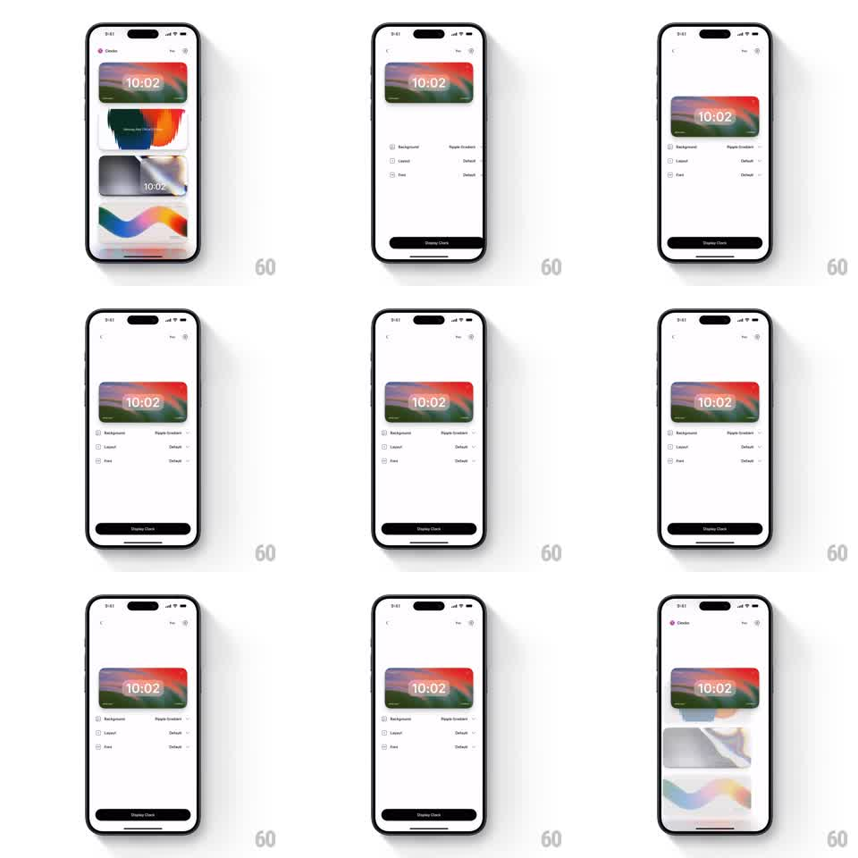

Media
Frame-by-frame

Rebuild this interaction 1:1: Clocks' card-to-screen morph - tapping "Display Clock" expands the selected clock card (a gradient landscape with the time) from the list into a full-screen clock, with the card's artwork and time label stretching seamlessly to fill the display.

Rebuild this interaction 1:1: Clocks' card-to-screen morph - tapping "Display Clock" expands the selected clock card (a gradient landscape with the time) from the list into a full-screen clock, with the card's artwork and time label stretching seamlessly to fill the display. ## Integration Integration: stack-agnostic spec - springs given as stiffness/damping, timed motions as duration + curve; map every value to your framework and animation library of choice. ## Scene White Clocks app. List state: a vertical stack of clock cards (colorful gradient landscapes, each with a time label like 10:02) under the Clocks header. Detail state: the selected card pinned near the top with Background (Ripple Gradient), Layout, and Font option rows below and a black "Display Clock" button. Display state: the card's artwork fills the whole screen with the time centered. ## Motion spec Pattern: shared-element card expansion (hero morph). - Tap a card: the card lifts (scale 1 -> 1.02, shadow deepens, 120ms), then expands toward its detail position while sibling cards slide away vertically (300ms ease-in-out); artwork and time label move as one shared element. - Option rows and the Display Clock button fade in after the card lands (200ms, 60ms stagger). - Tap "Display Clock": the button compresses (scale 0.95, 100ms), then the card expands to full screen - its bounds grow to the device edges (350ms ease-in-out), the option rows fade and slide down (200ms), and the artwork scales to cover while the time label re-centers and grows slightly. - Back gesture reverses the morph with the same shared element. ## Calibration - The artwork and time label never jump - they interpolate continuously between list, detail, and display bounds. - Corner radius animates with the expansion (12pt -> 0pt on display, restored on return). ## Reduced motion Crossfade between states (250ms) with no traveling element. ## Don't miss - The morph is the interaction - no intermediate modal or pushed screen. - The time keeps updating live through the morph.